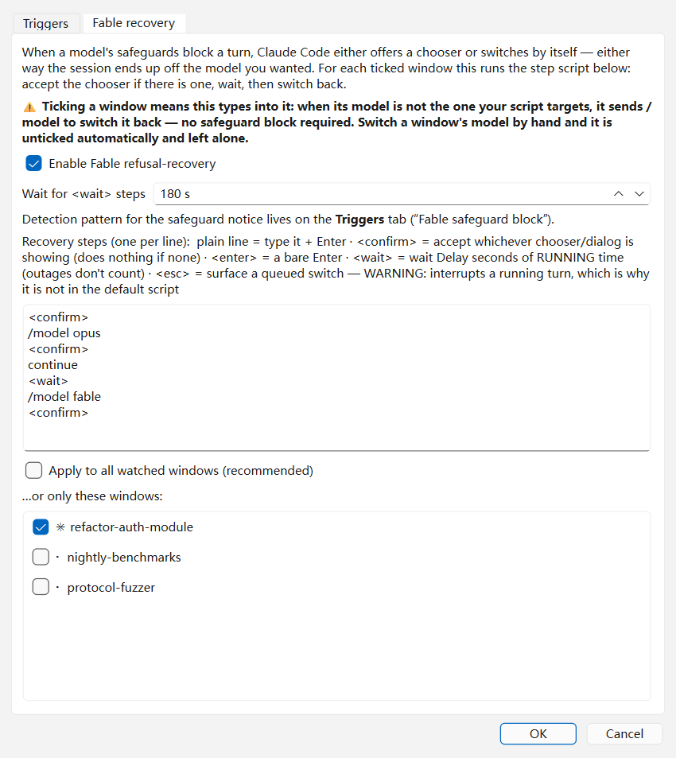
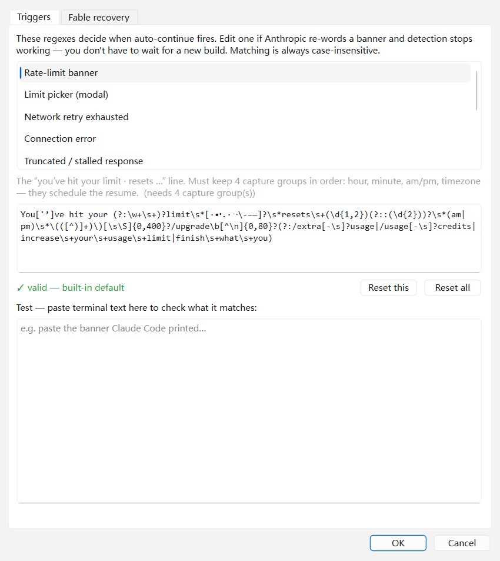

|
🎉 v2.0.1 发布 · 免费开源
任务被安全拦截卡住了？
|
这个工具最早只做一件事：检测到 5 小时限制 → 等到 reset 时刻 → 自动输入 continue。v2.0.0 起加入了一个新能力 —— 会话被模型安全策略拦住时，自动换到备用模型把这一轮做完，再切回来。v2.0.1 把这套流程在真实会话里跑通了。已经在用旧版本的朋友，直接跳到 "⇄ 模型恢复" 一节。
跑 Claude Code 长任务的朋友，下面这些场景应该都经历过：
- 睡前丢一个长任务给 Claude，醒来发现两小时后就被 limit 弹回去了，剩下的活全没干。
- 写安全相关的代码，被模型的安全策略判定为敏感内容，整轮直接停住，人不在就一直停着。
- 网络抖一下就卡死，得手动敲 continue 才能恢复。
- 同时开 3、4 个 Windows Terminal 跑不同分支，谁被卡了、谁又恢复了，得挨个去翻。
这是一个免费开源的小工具，把这些"人肉盯着、手动敲一下"的机械动作自动化，双击 EXE 就能用，不需要装 Python，不需要配环境。
先说这个功能解决的问题。做正经的安全审计、漏洞排查、协议分析这类工作时，模型的安全策略有时会把合法的编码任务误判为敏感内容，于是整轮回答直接中止，屏幕上留下这样一段：
Our intentionally broad safeguards allow us to deliver more
capabilities faster, but can sometimes flag legitimate coding,
cybersecurity, and biology tasks.
Double press esc to edit your last message, or
try a different model with /model.
注意最后一行 —— Claude Code 自己给出的建议就是"换个模型试试"。问题在于：这个动作必须有人坐在电脑前手动做。你睡着了、出门了、或者同时开了四个窗口没注意到，这个会话就一直停在那里，什么都不干。
默认的恢复脚本是这七步，每一步都可以在 Advanced 里自己改：
| <confirm> | 如果弹了选择框就按确认；没有就跳过 |
| /model opus | 自己切到备用模型（已经在上面了就跳过，不重复切） |
| <confirm> | 确认切换对话框 |
| continue | 在备用模型上把被拦的那一轮重做 |
| <wait> | 等 180 秒 —— 注意是实际运行时间，断网的时间不算 |
| /model fable | 切回原模型 |
| <confirm> | 确认 |

会自动往终端里敲字的功能，最怕的是帮倒忙。所以它带了四条护栏，每一条都是真实踩过坑之后加的：
|
⏸
正在出词时绝不切模型
切模型会在这一轮内部生效，等于把干到一半的活拦腰截断。所以切换前必须等这一轮跑完。实测拦下过一次：多等了 100 秒，保住了 86 秒的工作量。
|
✋
你手动切了，它就不管了
如果你自己把某个窗口切到别的模型，工具会认为这是你的决定，自动取消该窗口的勾选，不再往回掰。想恢复接管，在 Advanced 里重新勾上即可。
|
|
🚪
默认关闭，逐窗口开启
装好就是关的。要用得自己去 Advanced 打开，并逐个勾选允许它操作哪些窗口。没勾的窗口它一个键都不会敲。
|
📋
失败就说失败
收尾时不只看"停在哪个模型"，还看拦截是不是真的解除了。做了无用功会明确写成警告，不会含糊报一句 done 蒙混过去。
|
Auto-Continue 是一款给 Claude Code 重度用户的 Windows 守护程序。它通过 Win32 UI Automation 实时读取所有 Windows Terminal 窗口的可见文本，识别各种"会话被卡住"的信号，然后把对应的按键送到那个终端，让长任务继续往下跑。

|
⇄
安全拦截卡住 v2.0 新增
正经的安全/协议类编码任务被误判拦下，整轮停住。自动换到备用模型做完，再切回来。默认关闭，逐窗口开启。
|
⏰
5 小时窗口限制
识别到限制提示后解析出 reset 时刻，到点加缓冲后自动输入 continue。四种措辞、任意时区都认。
|
|
🌐
网络卡死 / 回答被截断
重试耗尽、连接错误、回答中途断流，都会每 10 分钟补一次 continue，直到恢复。会话一旦重新出词就立刻停手，不会反复打扰。
|
🪟
多窗口并行监控
同时开 5 个 Windows Terminal 跑不同任务？一个 GUI 全部看到。每个窗口独立倒计时、独立冷却、独立配置。
|
|
✏️
检测关键词自己可改 v2.0 新增
9 类检测规则全部开放编辑，还带实时测试框：把终端里的原文贴进去，立刻看到匹配结果。官方哪天改了提示措辞，你自己就能修好，不用等我发新版。（见下图）
|
🎯
精准识别多种限制措辞
覆盖
limit / session limit / weekly limit / usage limit，弯/直引号都识别。 |
|
🌏
全时区支持
不论你在 Asia/Shanghai、America/Los_Angeles、Europe/London 还是 UTC，自动算出下一次 reset 的本地时刻。
|
⚡
/effort 自动前置
每个窗口可独立配置
max / xhigh / high / medium / low，续命前自动设好等级再输入 continue。 |
|
🛡️
抢不到焦点就不敲
发送前先把目标窗口拉到前台并验证真的拉到了；没拉到就放弃这次、下轮再试。宁可不发，也绝不把 continue 打进你正在用的编辑器。
|
💤
Keep Awake 防睡眠
勾选后 Windows 11 的 Modern Standby 不再凌晨把进程杀掉，无人值守通宵跑任务也能续上。
|
|
🔄
一键检查更新 + 内置说明
右上角 2×2 四个按钮：Advanced / Check updates / Help / Reset。Help 是内置的英文操作说明，凌晨三点卡住时不用去翻文档。
|
🧪
Dry-Run 安全演练
勾上之后检测、倒计时全部照常，但不会真的按键。第一次跑、或想确认不会误触发别的窗口时用。
|

每一行就是一个 Windows Terminal 窗口，颜色和状态一目了然：
| 状态 | 含义 |
|---|---|
| Idle | 窗口正常，没有触发任何条件 |
| ⏳ Waiting | 已检测到 limit，正在倒计时等 reset 时刻 |
| ▶ Sending… | 正在把目标终端拉到前台并发送按键 |
| ✓ Sent | 续命已发送 |
| Cooldown | 发送后 15 分钟冷却，防止残留消息重复触发 |
| ⚠ Net retry | 网络卡死，正在定期补 continue 直到恢复 |
| ⇄ Fable-recover | 正在执行模型恢复脚本 |
| ⏎ Limit prompt | 屏幕上是等待选择的弹窗，需要按回车 |
| Excluded | 手动排除的窗口，不再监控 |
- 🔐 做安全 / 协议 / 底层相关开发的人——正经任务被安全策略误判的概率最高，模型恢复就是为这个场景做的
- 🌙 夜间跑长任务的人——睡前布置任务，醒来要看到完成而不是卡在半路
- ✈️ 出差 / 通勤期间挂任务的人——人不在电脑前，工具自动处理
- 🖥️ 多窗口并行重构的人——3 个分支 3 个会话同时跑，统一监控
- 🌐 网络不稳的用户——家宽抖动、公司代理偶发断流，自动恢复
| 项目 | 说明 |
|---|---|
| 当前版本 | v2.0.1 |
| 目标场景 | Claude Code（CLI 版）跑在 Windows Terminal 上 |
| 操作系统 | Windows 10 / 11（用了 Win32 UIA + SendInput） |
| 前置要求 | Windows Terminal（wt.exe），不支持老的 ConHost 控制台 |
| 运行依赖 | 无（单文件 EXE，自带 Python 运行时） |
| EXE 大小 | 25.5 MB |
| 轮询周期 | 默认 60 秒（5–600 秒可调） |
| Reset 缓冲 | 默认 60 秒（0–600 秒可调） |
| 卡死补发间隔 | 默认 600 秒（5–3600 秒可调） |
| 检测规则 | 9 类，全部可在 Advanced 中编辑并实时测试 |
| 模型恢复 | 默认关闭，需手动开启并逐窗口勾选 |
| 支持时区 | 任意 IANA 时区，常见缩写（EDT、PST 等）也识别 |
| 设置持久化 | Windows 注册表 HKCU\Software\auto_continue\gui |
| 测试覆盖 | 6 个测试套件，376 项断言，每次发版由 CI 全量跑过 |
| 开源协议 | MIT |
| 费用 | 完全免费 |
- 模型安全拦截自动恢复：换到备用模型做完这一轮再切回，脚本可自定义，默认关闭
- 正在出词时不切模型：切换会在这一轮内部生效，等于腰斩，所以必须等它跑完
- 手动切换即视为你的决定：自动取消该窗口勾选，不再往回掰
- 检测关键词全部开放编辑：9 类规则可改，带实时测试框，官方改措辞你自己就能修
- 右上角 2×2 按钮区：Advanced / Check updates / Help / Reset，内置英文操作说明
- 默认参数按实测重新校准（轮询 60s / 缓冲 60s / 补发 600s）
- 已经恢复的会话不再被反复补 continue —— 只要它重新开始出词就立刻停手
- 恢复失败会如实报失败，不再只看"停在哪个模型"就报成功
- Advanced 窗口过宽的问题修好了（两个标签漏了自动换行，导致设定的窗口尺寸从未生效）
- 设置在重启后完整保留；Reset 按钮可一键恢复出厂设置
工具只读所有 Windows Terminal 窗口的可见文本（通过 Win32 UIA），不会读网络流量、不会读凭据、不会上传任何数据。源码完全公开在 GitHub，可自行审计或自己编译：
- 只向触发的那个终端发送按键，不会误打其它窗口
- 发送前后保存并恢复原前台窗口焦点；抢不到焦点就放弃发送，绝不打进你正在用的程序
- 会自动换模型的功能默认关闭，且必须逐窗口授权
- 所有设置存在本地注册表，不联网、不上报、无遥测（仅检查更新时访问 GitHub）
- 完整 Python 源码 + PyInstaller spec 公开，可自行从源码构建 EXE
- 📊 reset 时间历史曲线（看自己的 5h 利用率）
- 🌐 非英文 Claude 输出的提示识别（待社区提供样本）
- 🐧 Linux / macOS 版本（需要适配 Terminal 读取方式）
📡 关注公众号
第一时间收到更新通知、新工具发布、bug 修复推送
工具免费开源，转发不要钱，帮更多人少手敲一次 continue